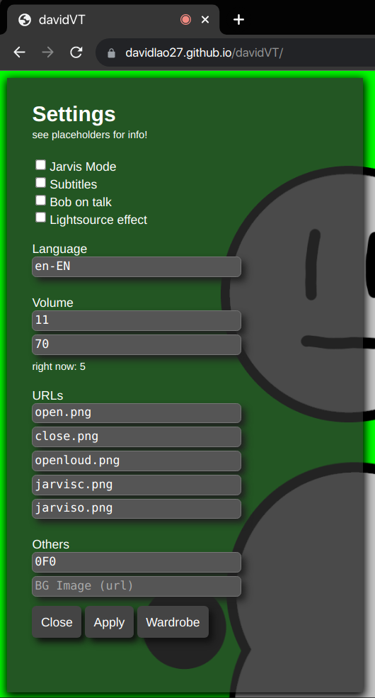

The menu
The menu is a left-side panel that can be opened with a hidden button.
That hidden button can be reached by clicking the top left side of the window screen.
If you didnt understand that, it's the top left part of this white-background documentation page.
If you're still dumb and don't know where it is, I'm sorry. The david3VT one can be opened with the Z key though, although this is useless info.
Alright, now you should be in it, it looks like this:
(you can click it to open it on another tab)

First off, there are four checkboxes (first two ones only [fully] work on Chrome). The first one is to enable Jarvis, a speech recognition feature. After you enable it, try saying "hey David" and it should react. Commands are not yet listed here.
The second one is used to enable speech-recognized subtitles. They are pre-processed, so it takes a bit to show up after saying anything.
The third one is to make the character move up and down when you talk, with its respective image. The last checkbox checks the background image's average (grayscaled) brightness and makes that into a brightness number. ONLY TESTED ON CHROME.
Language is a country and language specifier for the speech recognition. Examples are en-EN for English, es-ES for Spanish, and so on.
Volume's first textbox is for the lowest volume required to start talking. The second textbox declares the lowest volume considered screaming.
Now, for URLs, it's pretty obvious. First two ones are talking and mouth-closed respectively, the next one is talking loudly and the two last ones are jarvis mode mouth closed and jarvis mode mouth open.
Onto the last "Others" section, we have two textboxes. The first one declares the hex color (without #) to be the background's "chroma key" color, green in the picture. The second textbox declares the image to override the chroma color if you want to replace it directly without filtering it first on third party software like OBS.
For the last things: Apply is used to apply the settings, close to close the menu and the Wardrobe button to open the Wardrobe menu, which can Save, Load and Delete suits that are saved thanks to Cookies. These suits are saved for up to 1 year and per-device cookies.
Go back